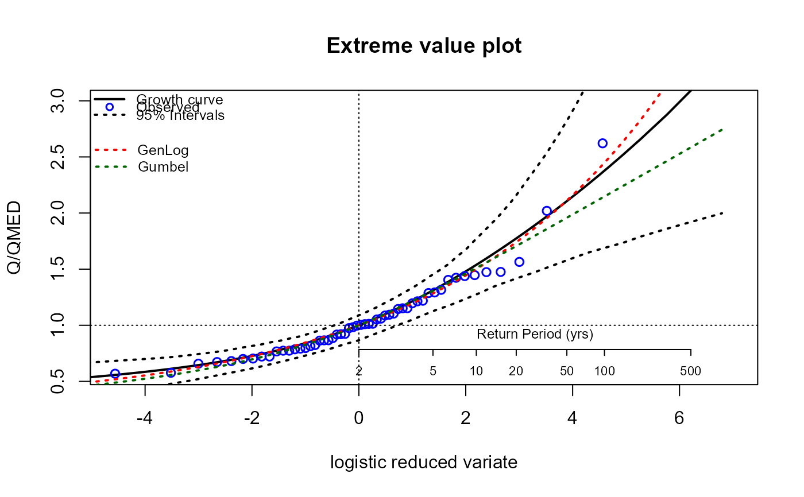
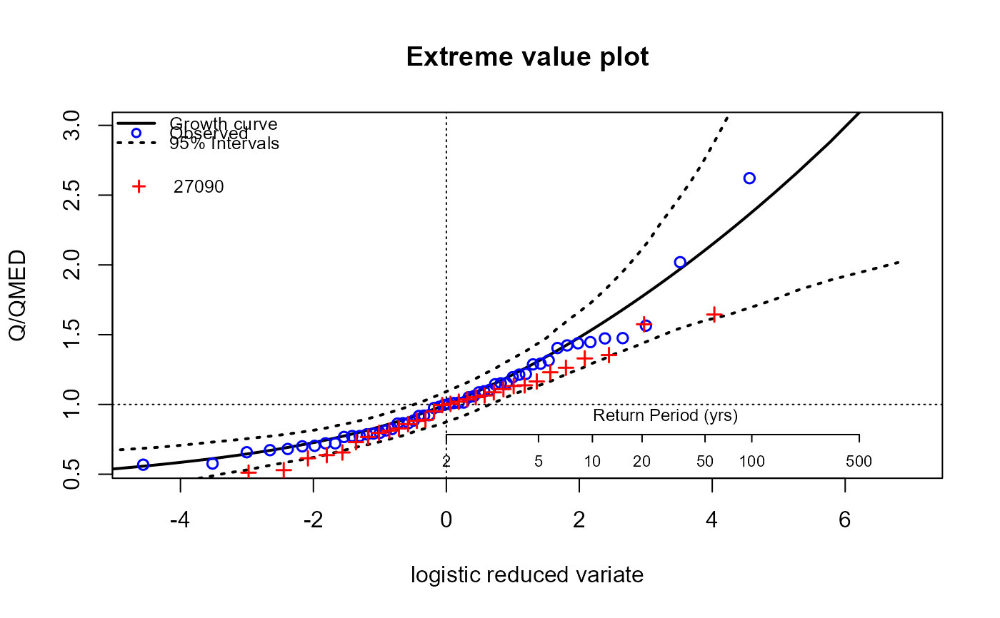

Add lines and/or points to an extreme value plot
EVPlotAdd.RdFunctionality to add extra lines or points to an extreme value plot (derived from the EVPlot function).
Usage
EVPlotAdd(
Pars,
dist = "GenLog",
Name = "Adjusted",
MED = NULL,
xyleg = NULL,
col = "red",
lty = 1,
pts = NULL,
ptSym = NULL
)Arguments
- Pars
a numeric vector of length two. The first is the Lcv (linear coefficient of variation) and the second is the Lskew (linear skewness).
- dist
distribution name with a choice of "GenLog", "GEV", "GenPareto", "Kappa3", and "Gumbel"
- Name
character string. User chosen name for points or line added (for the legend)
- MED
The two year return level. Necessary in the case where the EV plot is not scaled
- xyleg
a numeric vector of length two. They are the x and y position of the symbol and text to be added to the legend.
- col
The colour of the points of line that have been added
- lty
An integer. The type of line added
- pts
A numeric vector. An annual maximum sample, for example. This is for points to be added
- ptSym
An integer. The symbol of the points to be added
Value
Additional, user specified line or points to an extreme value plot derived from the EVPlot function.
Details
A line can be added using the Lcv and Lskew based on one of four distributions (Generalised extreme value, Generalised logistic, Gumbel, Generalised Pareto). Points can be added as a numeric vector. If a single point is required, the base points() function can be used and the x axis will need to be log(RP-1).
Examples
# Get an AMAX sample and plot the growth curve with the GEV distribution
am_203018 <- GetAM(203018)
EVPlot(am_203018$Flow, dist = "GEV")
# Now add a line (dotted and red) for the generalised logistic distribution
# First get the Lcv and Lskew using the L-moments function
pars <- as.numeric(LMoments(am_203018[, 2])[c(5, 6)])
EVPlotAdd(
Pars = pars, dist = "GenLog", Name = "GenLog",
xyleg = c(-5.2, 2.65), lty = 3
)
# Now add a line for the Gumbel distribution which is dark green and dashed
EVPlotAdd(
Pars = pars[1], dist = "Gumbel", Name = "Gumbel",
xyleg = c(-5.19, 2.5), lty = 3, col = "darkgreen"
)

# Now plot afresh and get another AMAX and add the points
EVPlot(am_203018$Flow, dist = "GEV")
am_27090 <- GetAM(27090)
EVPlotAdd(xyleg = c(-4.9, 2.65), pts = am_27090[, 2], Name = "27090")
